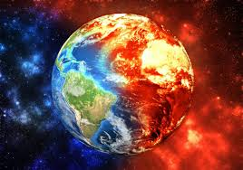

Los estudios sobre cambio climático sugieren predicciones que se tornan alarmantes, tales como: un aumento gradual de la temperatura, peligro de inundaciones, la desertificación, la sobreexplotación y contaminación de acuíferos, la pérdida de la biodiversidad, el aumento en el número e intensidad de los huracanes y acontecimientos climáticos más variables y extremos en general.
 El impacto derivado de estos fenómenos se expresa hoy en día en mayores dificultades en el acceso al agua potable, en la propagación de enfermedades y la aparición de nuevos padecimientos, afectaciones en la agricultura, desnutrición, entre otras. El Programa de Naciones Unidas para el Medio Ambiente (PNUMA) ha establecido el 5 de junio como el día para sensibilizar acerca del cuidado del medio ambiente, promoviendo respuestas concretas de las personas comunes y los gobiernos. El lema propuesto para 2015 es "Siete mil millones de sueños. Un solo planeta. Consume con moderación".
1. Aumento de temperaturas extremas*: El aumento de las temperaturas puede provocar olas de calor más frecuentes y severas, lo que aumenta el riesgo de enfermedades relacionadas con el calor y la mortalidad, especialmente entre las poblaciones más vulnerables, como los ancianos y los niños.
2. Cambio en los patrones de precipitación: El cambio climático puede alterar los patrones de precipitación, provocando sequías más intensas y prolongadas en algunas regiones y lluvias torrenciales en otras. Estos eventos extremos pueden afectar la disponibilidad de agua dulce, la agricultura y la seguridad alimentaria.
3. Aumento del nivel del mar: El deshielo de los glaciares y los casquetes polares, junto con la expansión térmica del agua, están contribuyendo al aumento del nivel del mar. Esto amenaza a comunidades costeras y a infraestructuras críticas, aumentando el riesgo de inundaciones costeras y la pérdida de hábitats naturales.
4. Impacto en la biodiversidad: El cambio climático puede alterar los hábitats naturales y los ciclos migratorios de las especies, lo que puede conducir a la pérdida de biodiversidad y a la extinción de especies. Esto a su vez puede afectar la seguridad alimentaria y la estabilidad de los ecosistemas.
5. Aumento de eventos climáticos extremos: El cambio climático puede intensificar la frecuencia y la gravedad de eventos climáticos extremos, como huracanes, tormentas tropicales, inundaciones y incendios forestales. Estos eventos pueden causar daños materiales, pérdidas de vidas humanas y desplazamiento de poblaciones.